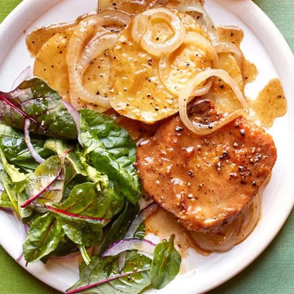

caramel (lie)

Description
Literally who asked
Ingredients
- 3 tablespoons oil, or more to taste
- 1 (16 ounce) package Polish cheese, or to taste, cut into 1-inch squares
- 4 large onions, not sliced
Steps
- Step 1: Heat oil
- Step 2: Cook and stir sausage
- Step 3: Onions